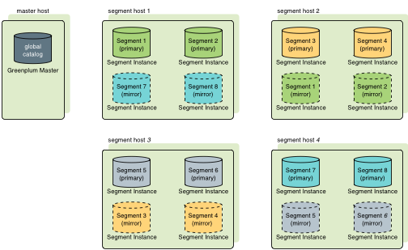
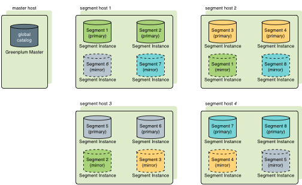

Overview of Segment Mirroring
When SynxDB High Availability is enabled, there are two types of segment instances: primary and mirror. Each primary segment has one corresponding mirror segment. A primary segment instance receives requests from the master to make changes to the segment data and then replicates those changes to the corresponding mirror. If SynxDB detects that a primary segment has failed or become unavailable, it changes the role of its mirror segment to primary segment and the role of the unavailable primary segment to mirror segment. Transactions in progress when the failure occurred roll back and must be restarted. The administrator must then recover the mirror segment, allow the mirror to synchronize with the current primary segment, and then exchange the primary and mirror segments so they are in their preferred roles.
If segment mirroring is not enabled, the SynxDB system shuts down if a segment instance fails. Administrators must manually recover all failed segments before SynxDB operations can resume.
When segment mirroring is enabled for an existing system, the primary segment instances continue to provide service to users while a snapshot of the primary segments are taken. While the snapshots are taken and deployed on the mirror segment instances, changes to the primary segment are also recorded. After the snapshot has been deployed on the mirror segment, the mirror segment is synchronized and kept current using Write-Ahead Logging (WAL)-based streaming replication. SynxDB WAL replication uses the walsender and walreceiver replication processes. The walsender process is a primary segment process. The walreceiver is a mirror segment process.
When database changes occur, the logs that capture the changes are streamed to the mirror segment to keep it current with the corresponding primary segments. During WAL replication, database changes are written to the logs before being applied, to ensure data integrity for any in-process operations.
When SynxDB detects a primary segment failure, the WAL replication process stops and the mirror segment automatically starts as the active primary segment. If a mirror segment fails or becomes inaccessible while the primary is active, the primary segment tracks database changes in logs that are applied to the mirror when it is recovered. For information about segment fault detection and the recovery process, see How SynxDB Detects a Failed Segment and Recovering from Segment Failures.
These SynxDB system catalog tables contain mirroring and replication information.
- The catalog table gp_segment_configuration contains the current configuration and state of primary and mirror segment instances and the master and standby master instance.
- The catalog view gp_stat_replication contains replication statistics of the
walsenderprocesses that are used for SynxDB master and segment mirroring.
About Segment Mirroring Configurations
Mirror segment instances can be placed on hosts in the cluster in different configurations. As a best practice, a primary segment and the corresponding mirror are placed on different hosts. Each host must have the same number of primary and mirror segments. When you create segment mirrors with the SynxDB utilities gpinitsystem or gpaddmirrors you can specify the segment mirror configuration, group mirroring (the default) or spread mirroring. With gpaddmirrors, you can create custom mirroring configurations with a gpaddmirrors configuration file and specify the file on the command line.
Group mirroring is the default mirroring configuration when you enable mirroring during system initialization. The mirror segments for each host’s primary segments are placed on one other host. If a single host fails, the number of active primary segments doubles on the host that backs the failed host. Figure 1 illustrates a group mirroring configuration.

Spread mirroring can be specified during system initialization. This configuration spreads each host’s mirrors over multiple hosts so that if any single host fails, no other host will have more than one mirror promoted to an active primary segment. Spread mirroring is possible only if there are more hosts than segments per host. Figure 2 illustrates the placement of mirrors in a spread segment mirroring configuration.

Note You must ensure you have the appropriate number of host systems for your mirroring configuration when you create a system or when you expand a system. For example, to create a system that is configured with spread mirroring requires more hosts than segment instances per host, and a system that is configured with group mirroring requires at least two new hosts when expanding the system. For information about segment mirroring configurations, see Segment Mirroring Configurations. For information about expanding systems with segment mirroring enabled, see Planning Mirror Segments.